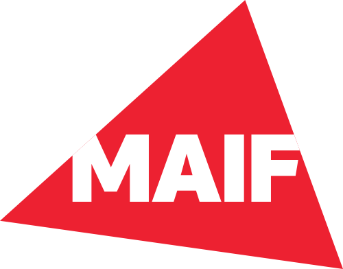
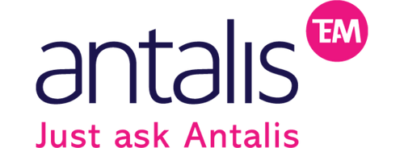
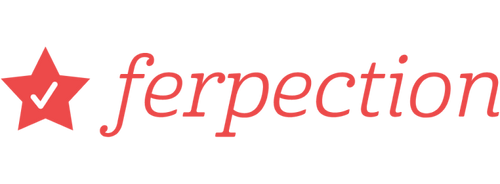

Je suis Patricia Bravo
Designer UI, illustratrice et étudiante en développement web front-end au Collège de Maisonneuve.
Web designer avec une vision internationale
Étudiante en développement web, graphiste et illustratrice, je conçois des designs accessibles et durables.
Mon objectif? Créer des expériences humaines et éthiques, en respect avec la planète.
Conférences, ateliers et mentorat
Pour déconstruire les mythes de l'accessibilité et vous donner toutes les clés.
ENI Nantes
Accessibilité : de la contrainte aux opportunités
AlTech
Accessibilité et inclusion, au-delà de la conformité
UX France
Membre de jury pour des étudiants en UX design
Design accessible : case studies
Design neuroinclusif pour le TDA/H
L'application Inflow aide les personnes avec un Trouble Déficit de l'Attention avec ou sans Hyperactivité (TDA/H). J'ai conçu l'identité visuelle et le site d'Inflow pour répondre aux besoins de leur audience neurodivergente.
UX design pour une association militante
Neon accompagne et forme des activistes en justice sociale. J'ai travaillé avec une équipe de freelances pour concevoir l'identité visuelle de Neon et leur nouveau site.
Plein de clients et partenaires satisfaits
   

Mes services
Je collabore avec des équipes anglophones et francophones pour créer des solutions adaptées à vos besoins. Mes services incluent :
- Design web créatif et fonctionnel
- UX/UI optimisé pour l'expérience utilisateur
- Sites adaptatifs pour tous les appareils
- Création de boutiques en ligne
- Développement web sur mesure